Datum: 22. 8. 2026, 7:28
Upřesnění: ZOČ - asistence na Mistrovství Evropy v požárním sportu
Adresa: Ostrava - Poruba, ul. Skautská
Technika: CAS 30 T815-7 Force
Datum: 20. 8. 2026, 14:15
Upřesnění: hoří tráva 10 m, od jiskřícího el. vedení
Adresa: Slezská Ostrava, ul. Pikartská
Technika: CAS 30 T815-7 Force
Datum: 17. 8. 2026, 18:05
Upřesnění: hoří transformátor
Adresa: Slezská Ostrava
Technika: CAS 30 T815-7 Force
Datum: 16. 8. 2026, 21:24
Upřesnění: vidí bílý dým
Adresa: Ostrava - Heřmanice
Technika: CAS 30 T815-7 Force
Datum: 13. 8. 2026, 17:46
Upřesnění: ZOČ - asistence na hradě u divadelního představení
Adresa: Slezská Ostrava, ul. Hradní
Technika: DA 15 MB Sprinter
Datum: 1. 8. 2026, 21:04
Upřesnění: stavební materiál létá ze střechy polikliniky
Adresa: Slezská Ostrava, ul. Chittussiho
Technika: DA 15 MB Sprinter
Datum: 1. 8. 2026, 14:44
Upřesnění: ZOČ - asistence u fotbalu
Adresa: Ostrava - Vítkovice, ul. Závodní
Technika: CAS 30 T815-7 Force
Datum: 16. 7. 2026, 4:58
Upřesnění: hoří zahradní chatka
Adresa: Slezská Ostrava
Technika: CAS 30 T815-7 Force
Datum: 16. 7. 2026, 00:50
Upřesnění: hoří chata
Adresa: Slezská Ostrava
Technika: CAS 30 T815-7 Force
Datum: 14. 7. 2026, 17:07
Upřesnění: přes sms - aplikace záchranka přišla sms Požár
Adresa: Ostrava - Heřmanice, ul. Orlovská
Technika: DA 15 MB Sprinter
Datum: 14. 7. 2026, 14:05
Upřesnění: převrácený strom na nosném laně
Adresa: Ostrava - Heřmanice, ul. Orlovská
Technika: DA 15 MB Sprinter
Datum: 12. 7. 2026, 20:13
Upřesnění: hoří 2 garáže
Adresa: Slezská Ostrava
Technika: DA 15 MB Sprinter
Datum: 11. 7. 2026, 18:02
Upřesnění: hoří suché klestí 3x4 m
Adresa: Slezská Ostrava, ul. Na Najmanské
Technika: DA 15 MB Sprinter
Datum: 11. 7. 2026, 16:48
Upřesnění: hoří travní porost
Adresa: Ostrava - Heřmanice, ul. Kotalova
Technika: DA 15 MB Sprinter
Datum: 10. 7. 2026, 17:18
Upřesnění: hoří tráva s odpadem, 3 m
Adresa: Ostrava - Heřmanice
Technika: DA 15 MB Sprinter
Datum: 2. 7. 2026, 13:46
Upřesnění: čerpání vody
Adresa: Slezská Ostrava, ul. Těšínská
Technika: DA 15 MB Sprinter
Datum: 1. 7. 2026, 17:13
Upřesnění: čerpání retenční nádrže
Adresa: Ostrava - Heřmanice, ul. V Korunce
Technika: CAS 30 T815-7 Force
Datum: 30. 6. 2026, 18:17
Upřesnění: požár křoví
Adresa: Ostrava - Heřmanice
Technika: CAS 30 T815-7 Force
Datum: 29. 6. 2026, 19:29
Upřesnění: strom na el. vedení vysokého napětí
Adresa: Ostrava - Heřmanice, ul. Zvonková
Technika: CAS 30 T815-7 Force
Datum: 29. 6. 2026, 15:33
Upřesnění: ZOČ - kropení komunikace
Adresa: Slezská Ostrava
Technika: CAS 30 T815-7 Force
Datum: 24. 6. 2026, 20:16
Upřesnění: DN se zraněním
Adresa: Ostrava - Heřmanice, ul. Kubínova
Technika: CAS 30 T815-7 Force
Datum: 21. 6. 2026, 21:55
Upřesnění: průzkum - dým z opuštěné budovy
Adresa: Slezská Ostrava
Technika: CAS 30 T815-7 Force
Datum: 6. 6. 2026, 14:47
Upřesnění: asistence na Noci muzeí
Adresa: Ostrava - Přívoz, ul. Zákrejsova
Technika: CAS 30 T815-7 Force, DA 15 MB Sprinter, NA MB Sprinter, OA Škoda Roomster
Datum: 3. 6. 2026, 12:15
Upřesnění: ohrožující stromy nad el. vedením
Adresa: Ostrava - Heřmanice, ul. Lachova
Technika: DA 15 MB Sprinter
Datum: 3. 6. 2026, 10:27
Upřesnění: spadlý sloup na bránu domu
Adresa: Ostrava - Heřmanice, ul. Motýlová
Technika: DA 15 MB Sprinter
Datum: 30. 5. 2026, 14:39
Upřesnění: asistence na SlezskaFest
Adresa: Slezská Ostrava, ul. Hradní náměstí
Technika: DA 15 MB Sprinter
Datum: 22. 5. 2026, 15:32
Upřesnění: taktické cvičení - hoří ve sklepním prostoru
Adresa: Ostrava - Vítkovice
Technika: DA 15 MB Sprinter
Datum: 14. 5. 2026, 15:02
Upřesnění: hustý dým za těžební věží
Adresa: Slezská Ostrava
Technika: NA MB Sprinter
Datum: 25. 3. 2026, 12:44
Upřesnění: strom na drátech
Adresa: Ostrava - Heřmanice, ul. Na Strži
Technika: DA 15 MB Sprinter
Datum: 25. 3. 2026, 11:04
Upřesnění: požár trávy a stromů na skládce
Adresa: Slezská Ostrava
Technika: DA 15 MB Sprinter
Datum: 14. 3. 2026, 10:10
Upřesnění: strom přes cestu
Adresa: Slezská Ostrava, ul. Trnkovecká
Technika: DA 15 MB Sprinter
Datum: 27. 2. 2026, 18:21
Upřesnění: požár rodinného domu
Adresa: Ostrava - Heřmanice, ul. Banášova
Technika: DA 15 MB Sprinter
Datum: 14. 2. 2026, 14:46
Upřesnění: hoří ve firemním areálu v kotelně
Adresa: Slezská Ostrava, ul. Slívova
Technika: DA 15 MB Sprinter
Datum: 4. 10. 2024, 7:23
Upřesnění: rozvoz vysoušečů
Adresa: Ostrava - Koblov, ul. Koblovská
Technika: NA MB Sprinter
Datum: 27. 9. 2024, 7:25
Upřesnění: rozvoz vysoušečů
Adresa: Ostrava - Koblov, ul. Koblovská
Technika: NA MB Sprinter
Datum: 23. 9. 2024, 7:35
Upřesnění: velkokapacitní čerpání hráze
Adresa: Ostrava - Nová Ves
Technika: DA 15 MB Sprinter, NA MB Sprinter, OA Škoda Roomster
Datum: 22. 9. 2024, 8:07
Upřesnění: dovoz humanitární pomoci
Adresa: Slezská Ostrava, ul. Antošovická
Technika: NA MB Sprinter
Datum: 21. 9. 2024, 7:45
Upřesnění: odvoz humanitární pomoci
Adresa: Ostrava - Koblov, ul. Antošovická
Technika: NA MB Sprinter
Datum: 19. 9. 2024, 7:30
Upřesnění: čerpání vody
Adresa: Ostrava - Koblov, ul. Antošovická
Technika: DA 15 MB Sprinter, NA MB Sprinter
Datum: 18. 9. 2024, 9:00
Upřesnění: čerpání sklepa
Adresa: Ostrava - Mariánské Hory, ul. Rybářská
Technika: DA 15 MB Sprinter, NA MB Sprinter
Datum: 18. 9. 2024, 9:00
Upřesnění: odvoz humanitární pomoci
Adresa: Ostrava - Koblov, ul. Antošovická
Technika: NA MB Sprinter
Datum: 17. 9. 2024, 10:00
Upřesnění: odstranění stromu
Adresa: Ostrava - Heřmanice, ul. Orlovská
Technika: NA MB Sprinter
Datum: 17. 9. 2024, 9:53
Upřesnění: čerpání v elektrárně
Adresa: Ostrava - Třebovice, ul. Elektrárenská
Technika: DA 15 MB Sprinter, NA MB Sprinter, OA Škoda Roomster
Datum: 17. 9. 2024, 7:17
Upřesnění: voda v podchodě
Adresa: Slezská Ostrava, ul. Bohumínská
Technika: DA 15 MB Sprinter
Datum: 16. 9. 2024, 16:40
Upřesnění: spadlý strom na RD
Adresa: Slezská Ostrava, ul. Vozačská
Technika: DA 15 MB Sprinter
Datum: 16. 9. 2024, 10:00
Upřesnění: zatopený sklep
Adresa: Ostrava - Heřmanice, ul. Záblatská
Technika: DA 15 MB Sprinter
Datum: 16. 9. 2024, 8:22
Upřesnění: spadlý strom přes komunikaci
Adresa: Slezská Ostrava, ul. Podzámčí
Technika: DA 15 MB Sprinter
Datum: 15. 9. 2024, 23:39
Upřesnění: evakuace 1 osoby
Adresa: Slezská Ostrava, ul. Šenovská
Technika: DA 15 MB Sprinter
Datum: 15. 9. 2024, 18:54
Upřesnění: strom na komunikaci
Adresa: Ostrava, ul. Kotalova
Technika: DA 15 MB Sprinter
Datum: 15. 9. 2024, 17:30
Upřesnění: evakuace DPS IRIS
Adresa: Ostrava - Mariánské Hory, ul. Rybářská
Technika: DA 15 MB Sprinter
Datum: 15. 9. 2024, 12:52
Upřesnění: voda ve sklepě
Adresa: Ostrava - Heřmanice, ul. Na Strži
Technika: DA 15 MB Sprinter
Datum: 15. 9. 2024, 12:52
Upřesnění: pytlováni a stavba protipovodňové hráze
Adresa: Ostrava - Koblov, ul. Hřbitovní
Technika: DA 15 MB Sprinter, NA MB Sprinter
Datum: 15. 9. 2024, 12:52
Upřesnění: 10 osob a 3 děti žádají o evakuaci
Adresa: Ostrava - Přívoz, ul. Božkova
Technika: DA 15 MB Sprinter
Datum: 15. 9. 2024, 10:06
Upřesnění: uvolnění stromů k provozu tratě
Adresa: Slezská Ostrava, ul. Podzámčí
Technika: DA 15 MB Sprinter
Datum: 15. 9. 2024, 9:03
Upřesnění: nakloněný strom na RD
Adresa: Ostrava - Heřmanice, ul. U Vlečky
Technika: DA 15 MB Sprinter
Datum: 15. 9. 2024, 9:03
Upřesnění: nakloněný strom na RD
Adresa: Ostrava - Heřmanice, ul. U Vlečky
Technika: DA 15 MB Sprinter
Datum: 15. 9. 2024, 7:53
Upřesnění: čerpání vody
Adresa: Ostrava - Heřmanice, ul. U Vlečky
Technika: DA 15 MB Sprinter
Datum: 15. 9. 2024, 6:51
Upřesnění: nakloněný strom hrozí pádem
Adresa: Ostrava - Heřmanice, ul. U Vlečky
Technika: DA 15 MB Sprinter
Datum: 15. 9. 2024, 5:20
Upřesnění: 1 m vody v domě
Adresa: Ostrava - Heřmanice, ul. Kubínova
Technika: DA 15 MB Sprinter
Datum: 15. 9. 2024, 4:36
Upřesnění: voda ve sklepě
Adresa: Ostrava - Heřmanice, ul. Koněvova
Technika: DA 15 MB Sprinter
Datum: 15. 9. 2024, 1:37
Upřesnění: zatopení sklepu
Adresa: Slezská Ostrava, ul. Hormistrů
Technika: DA 15 MB Sprinter
Datum: 14. 9. 2024, 22:02
Upřesnění: voda ve sklepě
Adresa: Ostrava - Heřmanice, ul. Vyhlídalova
Technika: DA 15 MB Sprinter
Datum: 14. 9. 2024, 21:22
Upřesnění: voda na střeše RD, neodtéká
Adresa: Slezská Ostrava, ul. Šachetní
Technika: DA 15 MB Sprinter
Datum: 14. 9. 2024, 20:07
Upřesnění: voda zaplavuje domov pro seniory
Adresa: Ostrava - Heřmanice, ul. Kubínova
Technika: DA 15 MB Sprinter, NA MB Sprinter
Datum: 14. 9. 2024, 19:50
Upřesnění: zatopené přízemní prostory tiskárny
Adresa: Ostrava - Heřmanice, ul. Sionkova
Technika: DA 15 MB Sprinter
Datum: 14. 9. 2024, 19:09
Upřesnění: voda ve sklepě
Adresa: Ostrava - Heřmanice, ul. V Korunce
Technika: DA 15 MB Sprinter
Datum: 14. 9. 2024, 17:32
Upřesnění: čerpání sklepa
Adresa: Ostrava - Heřmanice, ul. V Korunce
Technika: DA 15 MB Sprinter
Datum: 14. 9. 2024, 16:04
Upřesnění: čerpání sklepa
Adresa: Ostrava - Heřmanice, ul. Záblatská
Technika: DA 15 MB Sprinter
Datum: 14. 9. 2024, 15:01
Upřesnění: čerpání vody z bytovky
Adresa: Ostrava - Heřmanice, ul. Kubínova
Technika: DA 15 MB Sprinter, NA MB Sprinter
Datum: 14. 9. 2024, 14:08
Upřesnění: voda v garáži
Adresa: Ostrava - Heřmanice, ul. U Vlečky
Technika: DA 15 MB Sprinter
Datum: 14. 9. 2024, 13:49
Upřesnění: strom hrozí pádem
Adresa: Slezská Ostrava, ul. Vilová
Technika: DA 15 MB Sprinter
Datum: 14. 9. 2024, 13:19
Upřesnění: strom přes troleje
Adresa: Slezská Ostrava
Technika: DA 15 MB Sprinter
Datum: 14. 9. 2024, 11:50
Upřesnění: auto v laguně
Adresa: Ostrava - Muglinov, ul. Betonářská
Technika: DA 15 MB Sprinter
Datum: 14. 9. 2024, 10:02
Upřesnění: ze stropu teče voda z bytu
Adresa: Ostrava - Kunčičky, ul. Bořivojova
Technika: DA 15 MB Sprinter
Datum: 14. 9. 2024, 9:34
Upřesnění: voda v RD 20 cm
Adresa: Ostrava - Kunčičky, ul. Bořivojova
Technika: DA 15 MB Sprinter
Datum: 14. 9. 2024, 7:16
Upřesnění: zatopená kotelna v ZŠ
Adresa: Moravská Ostrava, ul. Zelená
Technika: DA 15 MB Sprinter
Datum: 14. 9. 2024, 6:33
Upřesnění: voda ve sklepě, teče do domu
Adresa: Ostrava - Heřmanice, ul. Kubínova
Technika: DA 15 MB Sprinter
Datum: 14. 9. 2024, 4:09
Upřesnění: 50 cm vody ve sklepě
Adresa: Ostrava - Heřmanice, ul. Kubínova
Technika: DA 15 MB Sprinter
Datum: 13. 9. 2024, 14:27
Upřesnění: pytlování písku
Adresa: Slezská Ostrava, ul. Bohumínská
Technika: NA MB Sprinter
Datum: 3. 11. 2023, 17:00
Upřesnění: TC: požár bytu a střechy nízké budovy
Adresa: Ostrava - Hrušov, ul. Plechanovova
Technika: CAS 32 T815
Datum: 8. 9. 2023, 19:29
Upřesnění: kouř pod mostem
Adresa: Slezská Ostrava
Technika: CAS 32 T815
Datum: 2. 9. 2023, 8:46
Upřesnění: zoč - asistence na festivalu
Adresa: Ostrava - Poruba, ul. Rekreační
Technika: CAS 32 T815, DA 15 MB Sprinter
Datum: 27. 8. 2023, 19:27
Upřesnění: zoč - asistence u divadelního představení
Adresa: Karviná - Doly, ul. U Barbory
Technika: OA Škoda Roomster
Datum: 27. 8. 2023, 13:43
Upřesnění: stromy hrozící pádem na budovu ZŠ
Adresa: Ostrava - Zábřeh, ul. Kosmonautů
Technika: DA 15 MB Sprinter, OA Škoda Roomster
Datum: 27. 8. 2023, 8:31
Upřesnění: spadlá větev na telefonní kabel
Adresa: Slezská Ostrava, ul. K Salmovci
Technika: DA 15 MB Sprinter
Datum: 27. 8. 2023, 2:07
Upřesnění: spadlý strom
Adresa: Ostrava - Heřmanice, ul. Orlovská
Technika: CAS 32 T815
Datum: 27. 8. 2023, 0:46
Upřesnění: spadlý strom na troleje
Adresa: Ostrava - Heřmanice, ul. Orlovská
Technika: CAS 32 T815
Datum: 26. 8. 2023, 19:19
Upřesnění: zoč - asistence
Adresa: Karviná - Doly, ul. U Barbory
Technika: DA 15 MB Sprinter
Datum: 19. 8. 2023, 14:51
Upřesnění: průzkum - pán vidí hustý čený kouř
Adresa: Ostrava - Heřmanice
Technika: CAS 32 T815
Datum: 16. 8. 2023, 19:01
Upřesnění: zoč - asistence na divadle
Adresa: Slezská Ostrava, ul. Hradní
Technika: DA 15 MB Sprinter
Datum: 15. 8. 2023, 18:51
Upřesnění: zoč - asistence na divadle
Adresa: Slezská Ostrava, ul. Hradní
Technika: DA 15 MB Sprinter
Datum: 10. 8. 2023, 17:03
Upřesnění: ZOČ: protlak kanalizace pro obec
Adresa: Ostrava - Heřmanice, ul. Na Bučině
Technika: CAS 32 T815
Datum: 12. 7. 2023, 16:42
Upřesnění: pán vidí kouř z lesa
Adresa: Ostrava - Heřmanice
Technika: CAS 32 T815
Datum: 20. 5. 2023, 15:11
Upřesnění: zoč - asistence na akci Noc v muzeí
Adresa: Ostrava - Přívoz, ul. Zákrejsova
Technika: CAS 32 T815, DA 15 MB Sprinter, NA MB Sprinter
Datum: 30. 4. 2023, 19:52
Upřesnění: požár odpadu
Adresa: Ostrava - Heřmanice, ul. Kubínova
Technika: CAS 32 T815
Datum: 21. 4. 2023, 19:34
Upřesnění: mrtvé ryby v rybníce - prověření oznámení
Adresa: Ostrava - Heřmanice, ul. Záblatská
Technika: DA 15 MB Sprinter
Datum: 18. 4. 2023, 19:18
Upřesnění: kouří kamna v domě
Adresa: Ostrava - Heřmanice, ul. Ochmanova
Technika: CAS 32 T815
Datum: 9. 4. 2023, 11:18
Upřesnění: otevření bytu
Adresa: Ostrava - Hrušov, ul. Růžová
Technika: OA Škoda Roomster
Datum: 31. 3. 2023, 18:24
Upřesnění: zakouřený byt
Adresa: Ostrava - Heřmanice, ul. Ochmanova
Technika: CAS 32 T815
Datum: 22. 3. 2023, 13:16
Upřesnění: hoří tráva 10 m
Adresa: Ostrava - Heřmanice, ul. Koněvova
Technika: CAS 32 T815
Datum: 18. 3. 2023, 14:00
Upřesnění: hoří 5x5m tráva
Adresa: Slezská Ostrava
Technika: CAS 32 T815
Datum: 4. 2. 2023, 12:31
Upřesnění: strom přes cestu
Adresa: Ostrava - Heřmanice, ul. K Oskárce
Technika: DA 15 MB Sprinter
Datum: 4. 2. 2023, 10:22
Upřesnění: uvolněný plech na střeše
Adresa: Slezská Ostrava, ul. 8. března
Technika: DA 15 MB Sprinter
Datum: 4. 2. 2023, 9:09
Upřesnění: střešní krytina ohrožuje okolí
Adresa: Slezská Ostrava, ul. Koněvova
Technika: DA 15 MB Sprinter
Datum: 4. 2. 2023, 5:14
Upřesnění: strom přes jeden pruh
Adresa: Ostrava - Heřmanice, ul. Kubínova
Technika: DA 15 MB Sprinter
Datum: 3. 2. 2023, 21:53
Upřesnění: kabel přes cestu
Adresa: Ostrava - Heřmanice, ul. Vrbická
Technika: DA 15 MB Sprinter
Datum: 13. 1. 2023, 6:24
Upřesnění: kouř z el. rozvaděče na benzínové pumpě
Adresa: Slezská Ostrava
Technika: CAS 32 T815
Datum: 10. 1. 2023, 10:43
Upřesnění: pán vidí černý kouř - kontrola
Adresa: Slezská Ostrava
Technika: CAS 32 T815
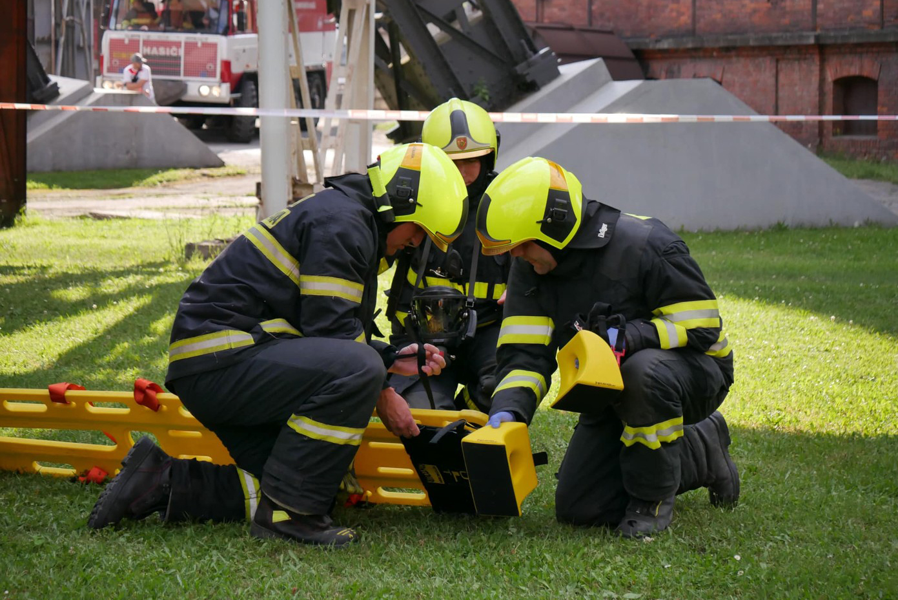
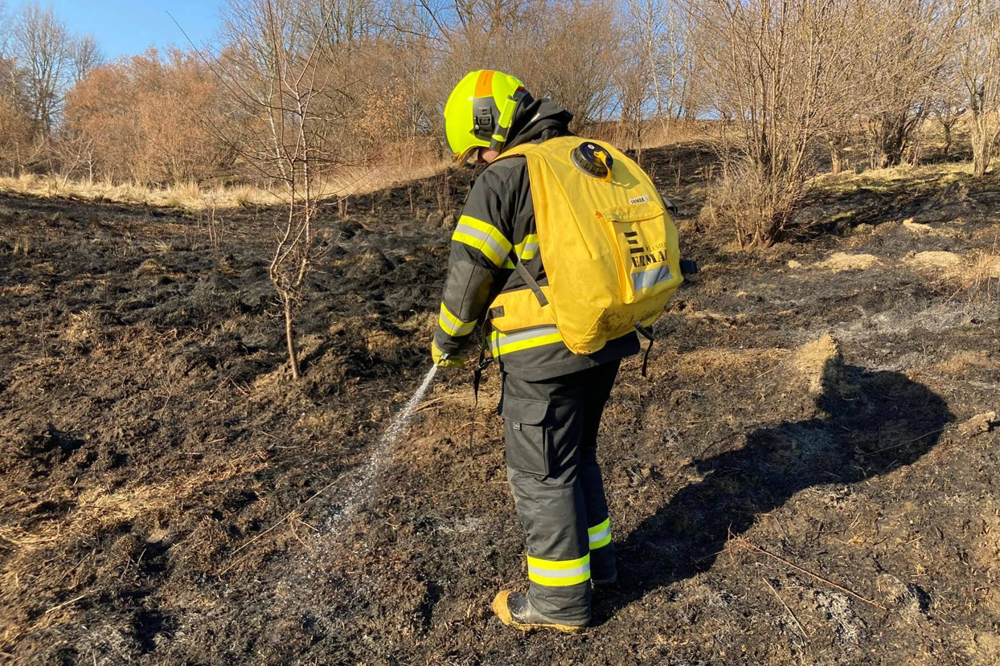
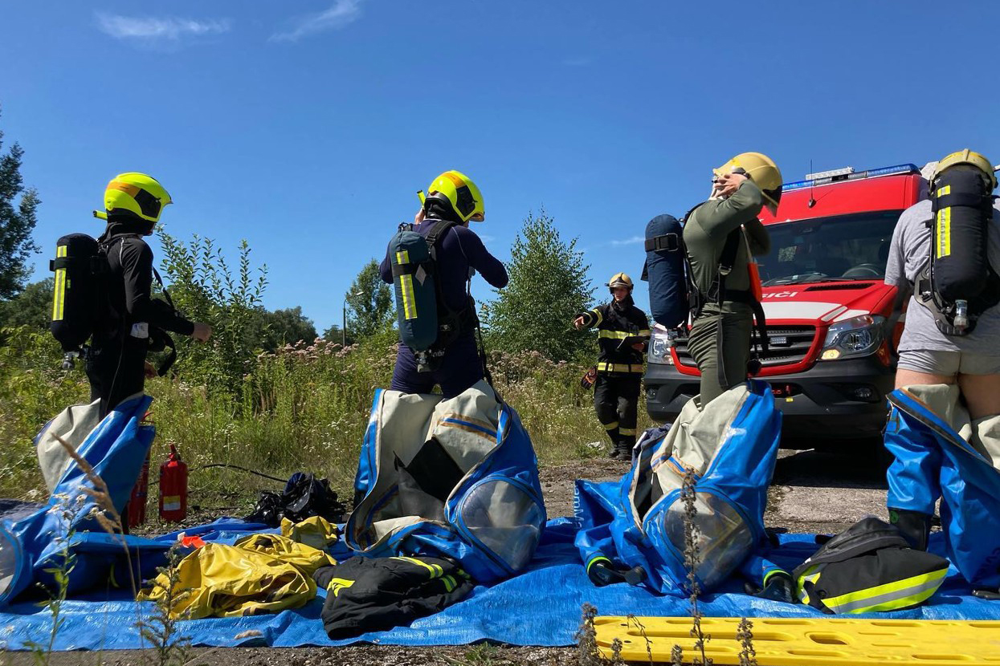
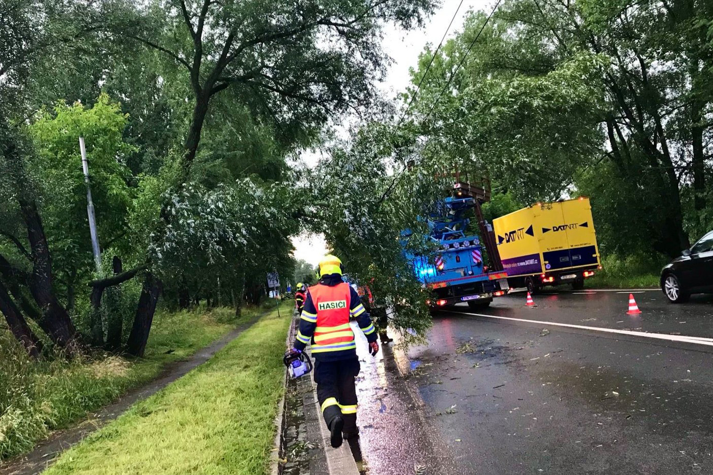
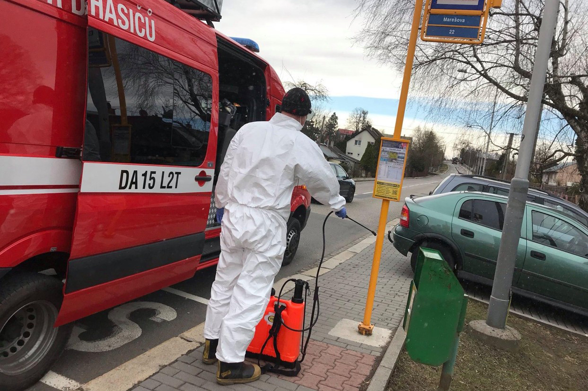
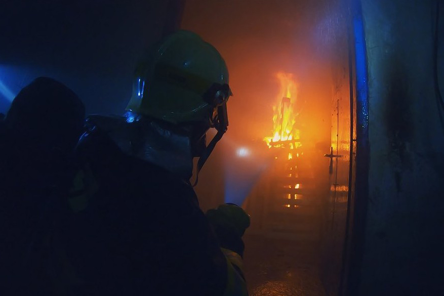
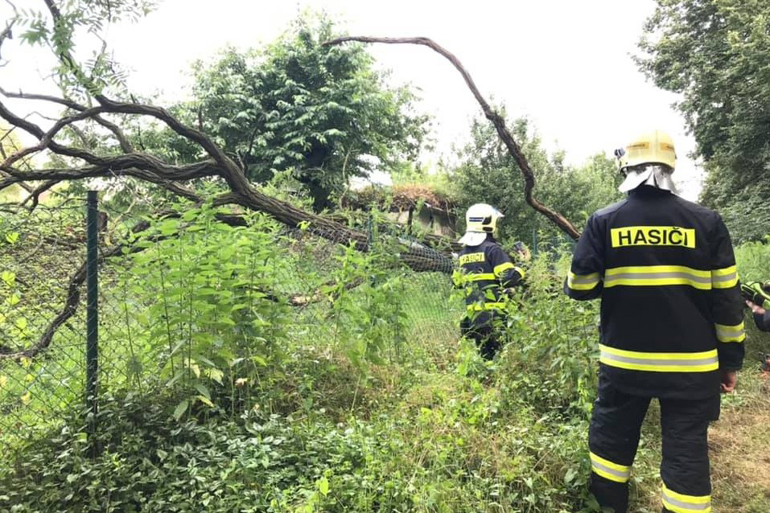
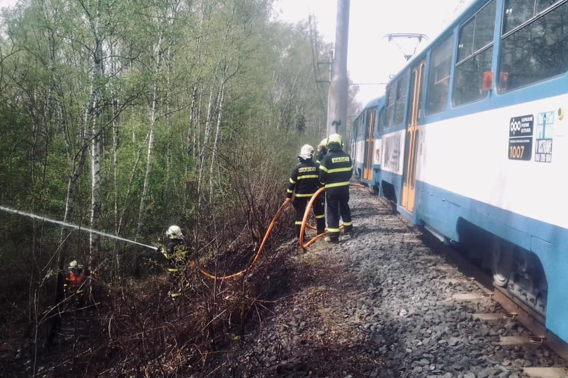
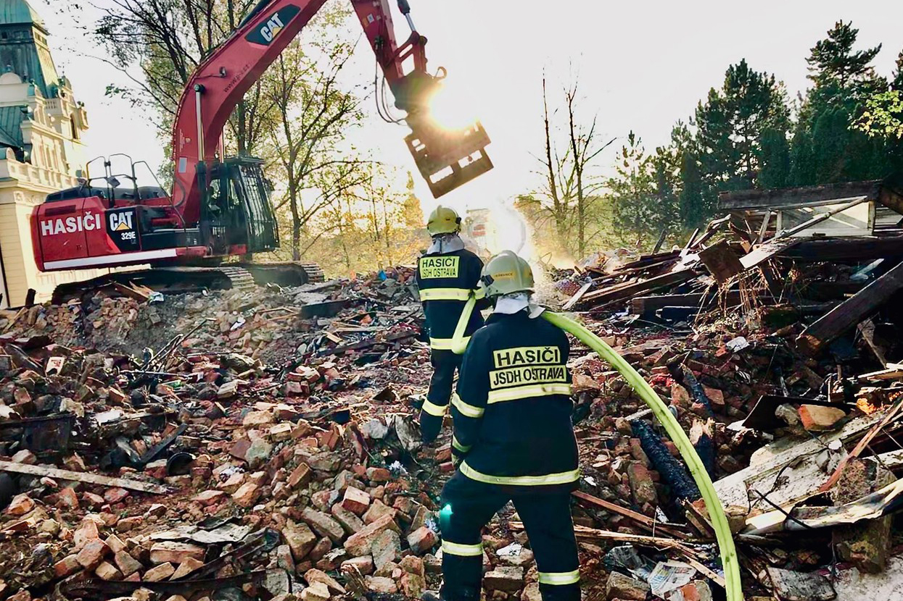
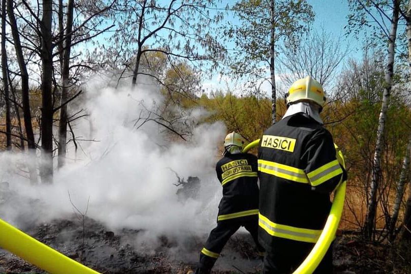
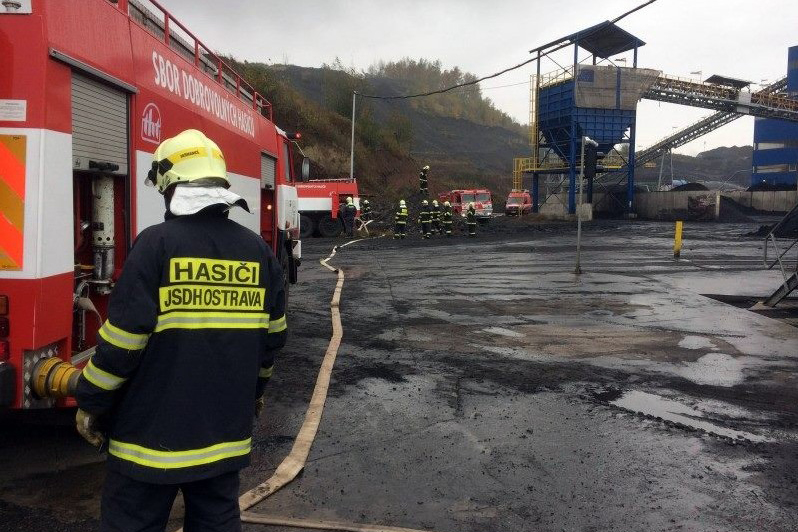
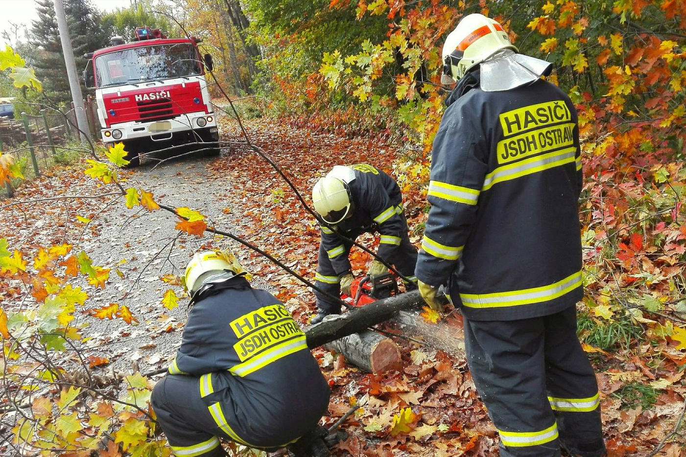
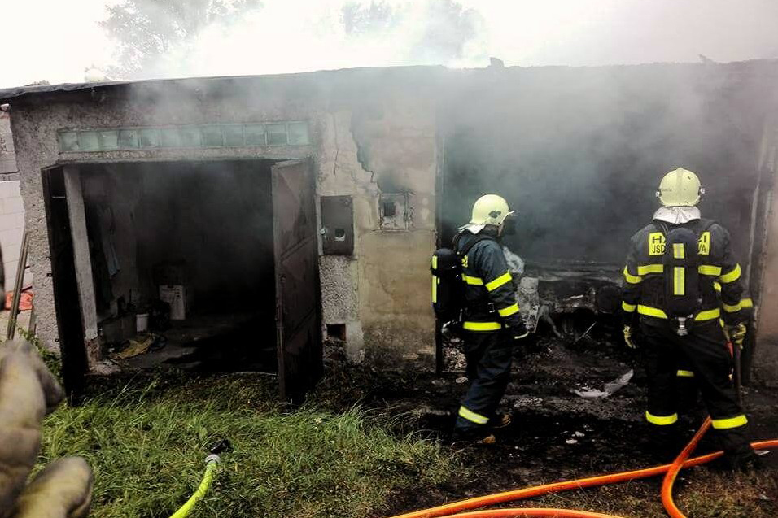
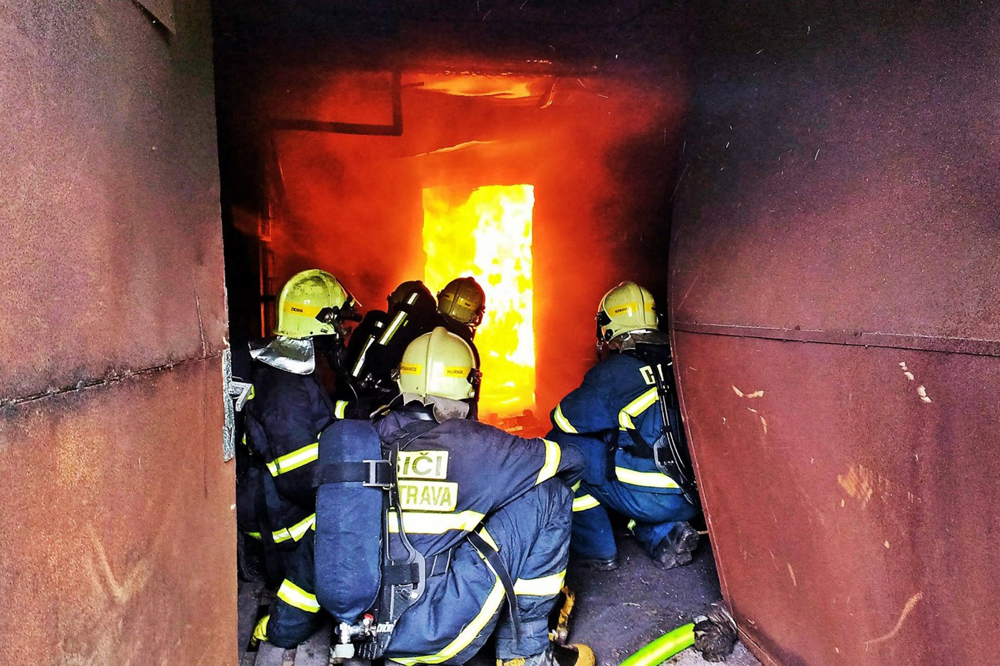
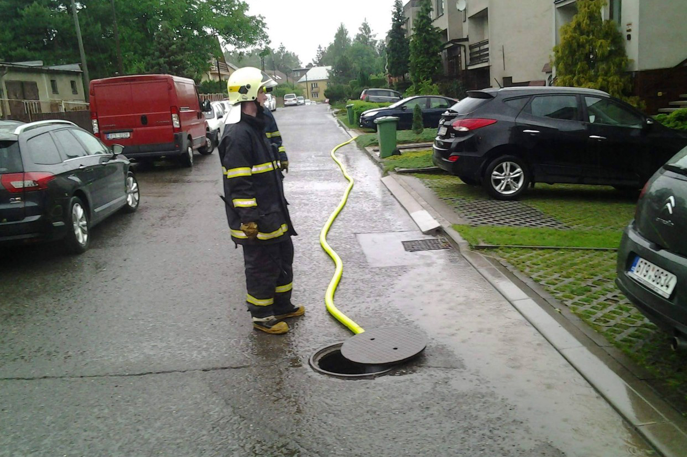
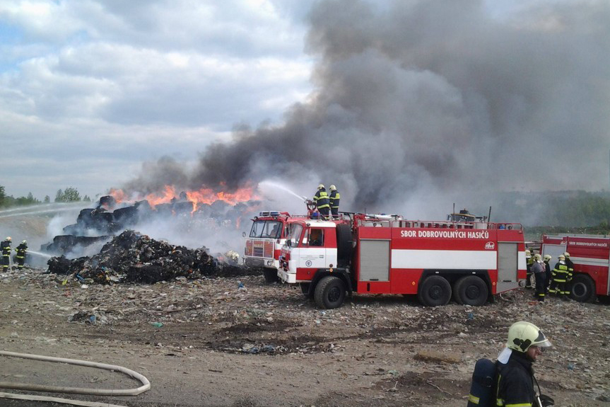